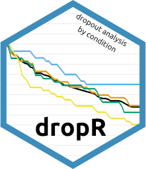

dropR: Dropout Analysis by Condition 
Installation
You can install the development version of dropR from GitHub with:
# install.packages("remotes")
remotes::install_github("iscience-kn/dropR")We are currently working to get dropR back on CRAN. Once it’s up again, you can install dropR via
install.packages("dropR")Usage as a Shiny App (Graphical User Interface)
To start dropR’s built-in GUI, run
dropR::start_app()or visit the dropR Web App.
Interactive Usage (use dropR on the R Console)
You can also use dropR’s functionality within R, i.e., either in the console or within your own functions and packages. Read more about interactive usage of dropR in our walkthrough article.